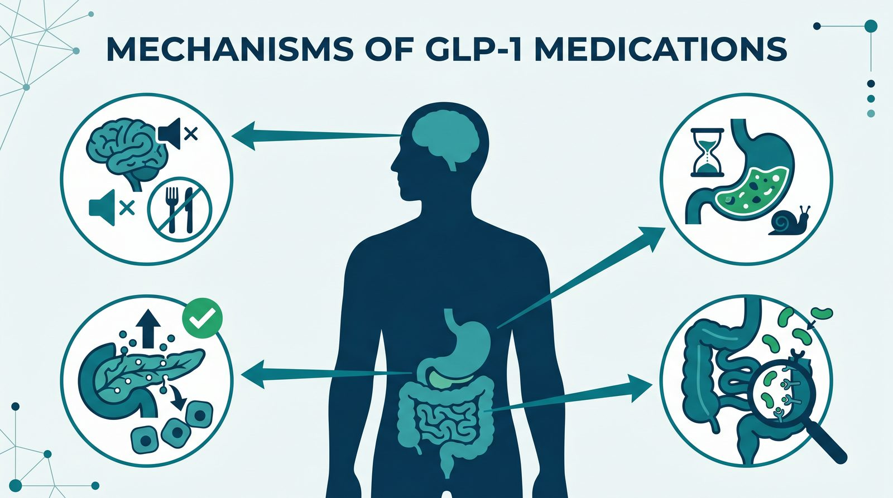

Key Takeaways
- The FDA approved Foundayo (orforglipron) on April 1, 2026, as a once-daily GLP-1 pill for weight loss that does not need to be taken on an empty stomach.[1]
- In the ATTAIN-1 trial, orforglipron 36 mg lowered body weight by an average of 11.2% at 72 weeks, compared with 2.1% on placebo; injectable tirzepatide 15 mg produced 20.9% in its own pivotal trial.[3][7]
- In the SELECT trial, semaglutide 2.4 mg lowered the rate of major adverse cardiovascular events in adults with cardiovascular disease and overweight or obesity (6.5% vs 8.0% with placebo; hazard ratio 0.80).[5]
- Stopping treatment leads to substantial regain: one year after stopping semaglutide in the STEP 1 extension, participants had regained two-thirds of the weight they had lost.[6]
- Lilly lists self-pay Foundayo starting at $149 per month for the lowest dose, and eligible people with commercial insurance may pay as little as $25 per month with the savings card (as of November 7, 2026).[19][21]
- Foundayo carries a boxed warning for thyroid C-cell tumors and should not be used by anyone with a personal or family history of medullary thyroid cancer or with MEN 2.[1][2]
The Weight Loss Medication Revolution
For most of the history of obesity medicine, drug options were limited. That has changed. In their pivotal trials, injectable semaglutide 2.4 mg lowered body weight by an average of 14.9% at 68 weeks, and tirzepatide 15 mg by 20.9% at 72 weeks.[9][7]
The catch? Until recently, the most effective options were weekly injections. The oral option, semaglutide tablets, must be taken on an empty stomach in the morning with no more than 4 ounces of water, followed by a wait of at least 30 minutes before eating, drinking, or taking other oral medicines.[8] Supply was also a problem: the FDA did not declare the tirzepatide and semaglutide injection shortages resolved until December 2024 and February 2025.[15]
Foundayo (orforglipron), approved by the FDA on April 1, 2026, changes that calculus: it is taken once daily, with or without food.[1][2] This guide walks through how these drugs work, which patients benefit, what the trial data actually show, what to expect in terms of side effects and cost, and the difficult question of what happens when you stop.
What GLP-1 Medications Actually Do

GLP-1, glucagon-like peptide-1, is a hormone your gut already makes. After you eat, your intestinal L-cells release GLP-1, which signals to your brain, pancreas, and digestive tract that food has arrived. The problem is that natural GLP-1 breaks down within minutes. GLP-1 receptor agonists are synthetic molecules engineered to mimic the hormone while resisting breakdown, so the signal lasts hours or days instead.
Four effects explain most of what these drugs do:
1. The brain: quieting "food noise." GLP-1 receptors in the hypothalamus and reward centers reduce appetite and the intrusive thoughts about food that many patients with obesity describe. A common refrain in survey and qualitative data is some variation of "I just stopped thinking about food all day." That phenomenon, often called food noise reduction, is one of the most consistent subjective effects of the class.
2. The stomach: delayed gastric emptying. GLP-1s slow how quickly the stomach releases food into the small intestine. You feel full faster and stay full longer. This is also why nausea is such a common early side effect, the slower emptying can feel uncomfortable while the body adjusts.
3. The pancreas: glucose-dependent insulin release. When blood sugar rises after a meal, GLP-1 amplifies the pancreas's insulin response. When blood sugar is normal, it doesn't. That glucose-dependent action is why GLP-1s rarely cause hypoglycemia unless combined with insulin or sulfonylureas.
4. The gut: satiety signaling. Receptors throughout the intestine reinforce the sense of fullness and dampen the feedback loops that drive "just one more bite."
Put together, these effects make it easier to eat less, without the willpower battle that usually accompanies dieting. The drug isn't burning fat; it's making undereating feel natural.
The GLP-1 Medications Available in 2026
The class has expanded quickly. Here's what you'll actually see prescribed for weight loss or weight-related indications in 2026:
| Brand | Generic | Form | Weight Loss (trials) | Primary Use |
|---|---|---|---|---|
| Foundayo | orforglipron | Oral pill daily (with or without food)[2] | 11.2% at 72 weeks (ATTAIN-1, 36 mg)[3] | Weight loss |
| Wegovy (oral) | oral semaglutide | Oral pill daily (empty stomach, then wait 30 min)[8] | 13.6% at 64 weeks (OASIS 4, 25 mg)[13] | Weight loss |
| Wegovy | semaglutide 2.4 mg | Weekly injection | 14.9% at 68 weeks (STEP 1)[9] | Weight loss |
| Ozempic | semaglutide | Weekly injection | Used off-label for weight | Type 2 diabetes |
| Zepbound | tirzepatide | Weekly injection | 20.9% at 72 weeks (SURMOUNT-1, 15 mg)[7] | Weight loss |
| Mounjaro | tirzepatide | Weekly injection | Off-label weight use | Type 2 diabetes |
| Saxenda | liraglutide | Daily injection | Not reviewed in this guide | Weight loss |
A few things worth noting. Tirzepatide (Zepbound/Mounjaro) is a dual GIP and GLP-1 receptor agonist,[7] which may help explain its larger average weight loss. Semaglutide and orforglipron act on the GLP-1 receptor only. Liraglutide has largely been eclipsed by the newer agents, though it remains available.
The real-world choice usually comes down to three questions: pill or injection? Do you have type 2 diabetes? What does your insurance cover? Patients without diabetes seeking maximum weight loss typically do best on tirzepatide. Patients who will not inject often end up on orforglipron. Patients with diabetes frequently get dual benefit from semaglutide or tirzepatide.
Foundayo (Orforglipron): The New Oral Option
Orforglipron's April 2026 approval is notable for several reasons. It used the FDA's new Commissioner's National Priority Voucher (CNPV) pathway, a faster review track, and became the first new molecular entity approved under that program.[1]
Orforglipron is also chemically different from oral semaglutide. Rybelsus and Wegovy tablets contain semaglutide, the same peptide used in the injections, and Wegovy tablets must be taken on an empty stomach with up to 4 ounces of water, followed by at least 30 minutes before food, drink, or other oral medicines.[8] Orforglipron is a small-molecule, nonpeptide GLP-1 receptor agonist,[3] and the Foundayo label says to take it once daily, with or without food.[2]
The ATTAIN-1 trial randomly assigned 3,127 adults with obesity and without diabetes to orforglipron 6 mg, 12 mg, or 36 mg, or placebo, for 72 weeks. Average weight change was -11.2% with 36 mg versus -2.1% with placebo. With 36 mg, 54.6% of participants lost at least 10% of their body weight and 36.0% lost at least 15%.[3] The approved Foundayo tablets use a different formulation: the label presents the trial results as equivalent Foundayo doses and reports an 11.1% average loss on 17.2 mg versus 2.1% on placebo at week 72.[2]
The head-to-head ACHIEVE-3 trial, published in The Lancet in 2026, compared orforglipron (12 mg or 36 mg) with oral semaglutide (7 mg or 14 mg) over 52 weeks in 1,698 adults with type 2 diabetes not controlled on metformin. HbA1c fell by an average of 1.91% with orforglipron 36 mg versus 1.47% with oral semaglutide 14 mg, and both orforglipron doses were superior to both semaglutide doses. Orforglipron also caused more gastrointestinal side effects, more stops because of side effects (10% on 36 mg versus 5% on semaglutide 14 mg), and a larger rise in pulse rate.[4]
Dosing follows a stepwise schedule set out in the label: start at 0.8 mg once daily; after at least 30 days, increase to 2.5 mg; after at least 30 more days, increase to 5.5 mg. The dose may then be raised to 9 mg, 14.5 mg, or 17.2 mg, after at least 30 days on each dose, based on response and tolerability. The maximum dose is 17.2 mg once daily.[2]
Orforglipron's average weight loss in ATTAIN-1 was lower than tirzepatide's in SURMOUNT-1.[3][7] Comparisons across separate trials are imprecise, so its clearest advantage is practical: it is taken once daily, with or without food.[2] For patients who won't inject, and for first-time GLP-1 users who want a pill, it's a reasonable option to discuss with a physician.
Is There an Oral Tirzepatide? Clearing Up the Confusion
No. Tirzepatide, sold as Mounjaro for diabetes and Zepbound for weight loss, is given as a once-weekly injection under the skin.[10] As of November 7, 2026, every tirzepatide product listed in DailyMed, the National Library of Medicine's database of drug labels, was an injection. The "oral tirzepatide" searches that bring people to this page usually come from one of two places: hearing that oral GLP-1s now exist and assuming tirzepatide is among them, or seeing "oral tirzepatide" products advertised by sellers. Compounded drugs are not approved by the FDA.[15]
Here is the accurate picture. There are two kinds of oral GLP-1 medication available in 2026:
- Oral semaglutide (Rybelsus for diabetes; Wegovy tablets for weight loss, with a 25 mg once-daily maintenance dose). This is the same semaglutide peptide as the injection. Wegovy tablets must be taken on an empty stomach in the morning with up to 4 ounces of water, and you then wait at least 30 minutes before eating, drinking, or taking other oral medicines.[8]
- Orforglipron (Foundayo). A small-molecule, nonpeptide GLP-1 receptor agonist[3] that is taken once daily, with or without food.[2]
If you specifically want tirzepatide's dual GIP/GLP-1 action, which in the SURMOUNT-1 trial produced an average 20.9% weight loss at the 15 mg dose, you need the weekly injection.[7] In their own pivotal trials, average weight loss was 11.2% with orforglipron 36 mg at 72 weeks[3] and 13.6% with oral semaglutide 25 mg at 64 weeks,[13] compared with 14.9% for injectable semaglutide 2.4 mg at 68 weeks.[9] These were separate trials in different populations, so the numbers are a rough guide rather than a head-to-head ranking.
The Oral GLP-1 Options Compared
| Medication | Molecule | Fasting required | Weight loss (pivotal trial) | Typical self-pay |
|---|---|---|---|---|
| Oral Wegovy (semaglutide tablets, 25 mg maintenance) | Peptide | Yes, empty stomach, then wait 30 min[8] | 13.6% at 64 weeks (OASIS 4)[13] | $149 to $299/mo[23] |
| Foundayo (orforglipron) | Non-peptide small molecule[3] | No, with or without food[2] | 11.2% at 72 weeks (ATTAIN-1, 36 mg)[3] | $149 to $299/mo[21] |
| Zepbound (tirzepatide, injectable) | Peptide (GIP/GLP-1) | N/A (weekly injection) | 20.9% at 72 weeks (SURMOUNT-1, 15 mg)[7] | $299 to $449/mo[22] |
The injectable tirzepatide is included for reference to show the efficacy gap. No oral option matched it in these trials, which is why the choice is often framed as convenience (oral) versus maximum weight loss (injectable). Self-pay prices are manufacturer list prices read on November 7, 2026, and depend on dose and program terms.
Shortage Status and the Compounding Question
The FDA declared the national shortage of tirzepatide injection resolved on December 19, 2024, and the shortage of semaglutide injection products resolved on February 21, 2025, according to an FDA page current as of April 1, 2026.[15] Check the FDA drug shortage database for the latest status.
Shortage status matters for compounding. Under federal law, outsourcing facilities may compound from bulk drug substances only in limited situations, such as when the drug is on the FDA's drug shortage list at the time of compounding, distribution, and dispensing. On April 30, 2026, the FDA proposed excluding semaglutide, tirzepatide, and liraglutide from the 503B bulks list, finding no clinical need for outsourcing facilities to compound these drugs from bulk substances.[16] The full analysis is in the FDA compounded GLP-1 503B proposal guide.
Because compounded drugs are not approved by the FDA,[15] an FDA-approved product is the more defensible choice when one is available.
For patients who cannot afford an approved product, the practical alternatives are manufacturer self-pay and savings programs and, for eligible Medicare Part D patients, the Medicare GLP-1 Bridge program for Foundayo and Zepbound, which runs from July 1, 2026, through December 31, 2027.[20]
Cardiovascular and Other Benefits
Weight loss gets the headlines, but the broader benefits of this class may matter more. The SELECT trial, published in 2023, enrolled 17,604 adults aged 45 or older with preexisting cardiovascular disease and a BMI of 27 or higher, but no history of diabetes. Over a mean follow-up of 39.8 months, a first major cardiovascular event (cardiovascular death, nonfatal heart attack, or nonfatal stroke) occurred in 6.5% of patients on semaglutide 2.4 mg versus 8.0% on placebo (hazard ratio 0.80).[5]
In trials, these medicines also improved:
- Waist circumference, triglycerides, and non-HDL cholesterol (orforglipron in ATTAIN-1)[3]
- Systolic blood pressure (orforglipron in ATTAIN-1)[3]
- HbA1c in adults with type 2 diabetes (orforglipron and oral semaglutide in ACHIEVE-3)[4]
Research on other conditions linked to obesity is ongoing; ask your physician whether any newer approvals apply to you.
What this adds up to clinically: GLP-1s are best understood as treating the underlying metabolic disease, not just as a weight loss intervention. That framing matches what patients report, blood pressure improving, energy returning, knees hurting less.
Who Should Consider GLP-1 Therapy
FDA-approved weight-loss GLP-1s such as Foundayo and Zepbound are indicated, alongside a reduced-calorie diet and more physical activity, for adults with obesity, or adults with overweight who have at least one weight-related condition.[2][10] In the pivotal trials, that meant:[7][9]
- BMI ≥ 30 (obesity), or
- BMI ≥ 27 (overweight) with at least one weight-related complication
These thresholds set eligibility, but they don't answer the more important question: who benefits most? The strongest evidence-based case for GLP-1 therapy is in patients who have both overweight or obesity and established cardiovascular disease. SELECT showed that group gets a significant reduction in major adverse cardiovascular events.[5] Second strongest: patients with type 2 diabetes, where semaglutide or tirzepatide treats both conditions in one prescription.
Other clear candidates include patients with BMI 35+ who have tried and failed multiple structured weight loss approaches, patients with obesity plus severe sleep apnea, and patients with a metabolic syndrome phenotype where reducing insulin resistance matters. Every patient in these groups deserves a real conversation about whether GLP-1 therapy fits their values and goals.
A point worth emphasizing: these medications are not a substitute for lifestyle work. They work alongside nutrition and physical activity. Without adequate protein intake and resistance training, a significant share of the weight lost on a GLP-1 will be lean mass rather than fat, particularly concerning for older adults where sarcopenia is already a risk.
Off-label use for low-BMI cosmetic weight loss is not supported by the evidence, exposes the patient to real risks (including rapid muscle loss and rebound after discontinuation), and typically isn't covered by insurance. This use is outside FDA-approved indications.
Who Should NOT Take GLP-1s
- Personal or family history of medullary thyroid carcinoma (MTC). This is the boxed warning. GLP-1 receptor agonists that are active in rats and mice caused thyroid C-cell tumors in those animals; the human relevance has not been determined, but the contraindication is strict.[2]
- Multiple Endocrine Neoplasia syndrome type 2 (MEN 2), a genetic condition that predisposes to MTC.[2]
- Known serious hypersensitivity to the medication or its ingredients.[2]
Beyond those contraindications, the Foundayo label and the FDA announcement list warnings that call for caution:[1][2]
- Pancreatitis. These medicines carry a warning for acute pancreatitis. If pancreatitis is suspected, the drug is stopped and the condition is treated.[2] Tell your physician if you have had pancreatitis before.
- Severe gastrointestinal problems. These medicines can cause severe gastrointestinal reactions, and they slow stomach emptying.[1][2]
- Diabetic retinopathy. People with a history of diabetic retinopathy should be monitored for progression.[2]
- Gallbladder disease. Gallstones were reported in the clinical trials, and suspected cholecystitis calls for gallbladder testing and follow-up.[2]
- Pregnancy or planning pregnancy. Foundayo is stopped when a pregnancy is recognized.[2] For semaglutide, the Wegovy label advises stopping at least 2 months before a planned pregnancy because of semaglutide's long half-life.[8]
- Upcoming surgery or sedation. These medicines carry a warning about pulmonary aspiration during general anesthesia or deep sedation, so tell your healthcare providers before any planned surgery or procedure.[2]
- On another GLP-1. Foundayo should not be used in combination with another GLP-1 receptor agonist.[1]
Side Effects: What to Expect
GI side effects dominate the profile. In the pooled trials in the Foundayo label, nausea affected 26% to 35% of patients across doses (10% on placebo), constipation 20% to 27% (9% on placebo), diarrhea 21% to 25% (11% on placebo), and vomiting 13% to 24% (4% on placebo).[2] In ATTAIN-1, side effects led 5.3% to 10.3% of patients on orforglipron to stop treatment, compared with 2.7% on placebo, and the side effect profile was consistent with other GLP-1 receptor agonists.[3]
Two things matter about these numbers. First, gastrointestinal side effects occur mainly during dose escalation[7] and typically subside with time.[9] Second, they are manageable with a few practical strategies that clinicians commonly advise before starting therapy:
- Stay on each escalation step for the full recommended interval. Don't let enthusiasm push you up faster.
- Eat smaller, more frequent meals. Large meals against a slowly emptying stomach are a recipe for nausea.
- Prioritize protein at each meal to help preserve muscle during weight loss.
- Hydrate deliberately. Dehydration makes nausea worse, and kidney injury on these medicines has mostly occurred in people with gastrointestinal side effects leading to dehydration.[2]
- Avoid high-fat and very sweet foods early on, they are the most common reported triggers for nausea and vomiting in clinical observation.
Serious side effects are uncommon but real. Pancreatitis presents as severe, persistent upper abdominal pain often radiating to the back; if it is suspected, the drug is stopped.[2] Acute kidney injury can happen when dehydration from vomiting or diarrhea is left untreated.[2] Gallbladder disease, including gallstones, has been reported.[2]
Muscle mass loss deserves specific attention. Part of the weight lost on a GLP-1 can come from lean body mass rather than fat. The concern is greatest in older patients, where functional capacity and fall risk are at stake. The fix isn't medical, it's regular resistance training plus adequate protein. That counseling is as important as the prescription itself.
The Weight Regain Question
This is one of the hardest conversations in obesity medicine, and it's one that should happen before starting therapy, not after. The weight lost on these medications does not stay off once the medication stops. That statement is as well-supported as any other finding in the field.
The STEP 1 extension followed 327 participants for a year after semaglutide 2.4 mg or placebo was stopped. One year after withdrawal, those who had taken semaglutide had regained two-thirds of their prior weight loss.[6] The SURMOUNT-4 trial showed a similar pattern for tirzepatide: after a 36-week lead-in on tirzepatide, participants switched to placebo regained 14.0% of body weight over the following 52 weeks, while those who continued tirzepatide lost a further 5.5%.[12] A systematic review of 37 studies led by Oxford researchers projected that people return to their pre-treatment weight about 1.7 years after stopping a weight management medication, and about 1.5 years after stopping semaglutide or tirzepatide.[17]
Real-world persistence is also a problem. In one health system in Ohio and Florida, among adults who stopped semaglutide or tirzepatide within the first year, the most common reason was cost or insurance problems (47.6%), followed by side effects (14.6%) and shortages (11.8%).[18] Stopping is followed by rapid weight regain.[17]
Why does this happen? GLP-1 medications treat obesity; they don't cure it. The STEP 1 extension authors wrote that their findings confirm the chronicity of obesity and suggest ongoing treatment is required to maintain improvements in weight and health.[6] The metabolic gains fade too: in the Oxford review, markers such as HbA1c, blood pressure, and cholesterol were projected to return to baseline within 1.4 years of stopping.[17]
Two things are worth keeping in mind. First: plan for long-term, possibly lifelong therapy. If you're not ready for that commitment, a GLP-1 may not be the right fit right now. Second: if you do eventually need to come off, do it with your physician's guidance, keep up protein and resistance training, and expect that some regain is likely.
Cost and Access in 2026
Price is a major barrier: in one health-system study, cost or insurance problems were the most common reason people stopped semaglutide or tirzepatide.[18] Manufacturer prices as of November 7, 2026:
| Medication | Self-Pay (monthly) | Insurance / Savings Card |
|---|---|---|
| Foundayo (orforglipron) | $149 (0.8 mg and 2.5 mg), $199 (5.5 mg), $299 (9 mg and higher; the 14.5 mg and 17.2 mg prices require a refill within 45 days)[21] | As little as $25/month with commercial insurance and the Foundayo savings card;[19] $50/month for eligible Medicare Part D patients through the Medicare GLP-1 Bridge, July 1, 2026, through December 31, 2027[20] |
| Wegovy (oral semaglutide) | $149 (1.5 mg), $199 (4 mg), $299 (9 mg and 25 mg)[23] | As little as $25 with commercial insurance, subject to a maximum savings of $100/month[23] |
| Wegovy (injectable) | $349/month for doses up to 2.4 mg; new patients pay $199 for each of the first two months of 0.25 mg and 0.5 mg (offer through December 31, 2026)[23] | As little as $25 with commercial insurance, subject to a maximum savings of $100/month[23] |
| Zepbound (tirzepatide) | $299 to $449/month via LillyDirect; regular prices of $499 to $699 apply to the 7.5 mg and higher doses if not refilled within 45 days[22] | Varies by plan; check with your insurer |
A few things to know about coverage. Coverage rules vary by plan, so check with your insurer before you start. For Medicare Part D, the Medicare GLP-1 Bridge requires Part D coverage, BMI criteria, and a prior authorization from your provider.[20]
Manufacturer direct-to-patient pharmacies such as LillyDirect and NovoCare list self-pay prices, and those prices change with the dose and program terms.[21][22][23]
A warning about compounded semaglutide: compounded drugs are not approved by the FDA.[15] On April 30, 2026, the FDA proposed to exclude semaglutide, tirzepatide, and liraglutide from the 503B bulks list entirely, finding no clinical need for outsourcing facilities to compound these drugs from bulk substances.[16]
What This Means for You
If you're considering a GLP-1, here's the practical roadmap a physician is likely to walk you through:
Start with a physician visit. You need an actual evaluation, BMI calculation, review of weight-related conditions, medication history, and screening for contraindications. Telehealth visits are well-suited for this; the initial evaluation, lab review, dose titration, and monthly check-ins can all be done remotely.
Baseline labs are standard. Most physicians will order a complete blood count (CBC), a metabolic panel (CMP), lipid panel, HbA1c, and TSH before starting. Some add lipase. These establish a baseline and screen for conditions, thyroid disease, kidney issues, undiagnosed diabetes, that affect drug choice.
Set realistic expectations. The final weight loss depends on the drug, the dose, and how well lifestyle factors support it. In their pivotal trials, average weight loss at the highest studied dose was 11.2% with orforglipron at 72 weeks,[3] 14.9% with injectable semaglutide at 68 weeks,[9] and 20.9% with tirzepatide at 72 weeks.[7] Individual results vary.
Plan for long-term therapy. Before you start, think through whether you're prepared for a multi-year or indefinite commitment. If not, a different approach may be a better starting point.
Invest in muscle preservation. Regular resistance training and adequate daily protein are not optional, they are part of the treatment. Without them, part of your weight loss may be muscle.
Expect monthly contact with your physician during titration. Dose adjustments, side effect management, and lab follow-up are the norm. Once you're stable on a maintenance dose, follow-up can stretch to every 3 months.
Red Flags: When to Contact Your Doctor
- Severe or persistent abdominal pain, especially upper abdominal pain radiating to the back, this can signal pancreatitis and requires immediate evaluation.
- Vomiting that prevents you from keeping fluids down, this raises the risk of dehydration and kidney injury.
- Signs of dehydration, dizziness when standing, reduced urine output, dark urine, or confusion.
- Rapid or racing heart that isn't explained by exertion or anxiety.
- A new neck lump, hoarseness, or voice changes, these can be signs of thyroid involvement and warrant evaluation.
- Pregnancy, stop the medication and contact your physician immediately.
- Before any surgery or procedure with anesthesia or sedation, inform your surgical and anesthesia teams that you are on a GLP-1, because these medicines carry a warning about aspiration during general anesthesia or deep sedation.[2]
- Severe right upper abdominal pain with nausea, possible gallbladder disease.
Frequently Asked Questions
Most patients need long-term therapy. One year after stopping semaglutide in the STEP 1 trial extension, participants had regained two-thirds of the weight they had lost, and the trial authors concluded that ongoing treatment is required to maintain improvements in weight and health.[6] Obesity is a chronic disease,[11] and the benefit of these medicines lasts only as long as the treatment.
Foundayo is taken once daily, with or without food.[2] Because it delays stomach emptying, it can affect how other oral medicines are absorbed.[2] The label also advises people using oral hormonal birth control to switch to a non-oral method, or to add a barrier method for 30 days after starting Foundayo and for 30 days after each dose increase.[2] Tell your prescriber about every medication you take, including over-the-counter products and supplements.
For Foundayo, take a missed dose as soon as possible. If 7 or more doses in a row are missed, the dose escalation is restarted at a lower dose, so contact your physician.[2] For Zepbound, a missed weekly dose can be taken within 4 days (96 hours); after that, skip it and resume your regular schedule.[10] For Wegovy injection, take the missed dose as soon as possible if the next scheduled dose is more than 2 days away; if it is less than 2 days away, skip it.[8]
It has not been shown to be. Compounded drugs are not approved by the FDA, so they do not go through the FDA review for safety, effectiveness, and quality that approved drugs do.[15] The FDA has declared the semaglutide and tirzepatide injection shortages resolved,[15] and on April 30, 2026, it proposed excluding semaglutide, tirzepatide, and liraglutide from the 503B bulks list, finding no clinical need for outsourcing facilities to compound these drugs from bulk substances.[16] An FDA-approved product is the safer choice when one is available.
Coverage varies widely by plan, so call your insurer before you start to confirm specifics. For eligible Medicare Part D patients, the Medicare GLP-1 Bridge program offers Foundayo or Zepbound for $50 per month from July 1, 2026, through December 31, 2027; it requires Part D coverage, BMI criteria, and a prior authorization from your provider.[20]
Contact your physician right away. The Foundayo and Zepbound labels say to stop the medicine when a pregnancy is recognized,[2][10] and the Wegovy label advises stopping semaglutide at least 2 months before a planned pregnancy because of its long half-life.[8] The Foundayo and Zepbound labels also advise people using oral hormonal birth control to switch to a non-oral method or add a barrier method after starting the medicine (and, for Zepbound, after each dose increase).[2][10]
References
- U.S. Food and Drug Administration. FDA Approves First New Molecular Entity Under National Priority Voucher Program. Press announcement, April 1, 2026. Accessed November 7, 2026. https://www.fda.gov/news-events/press-announcements/fda-approves-first-new-molecular-entity-under-national-priority-voucher-program
- Eli Lilly and Company. FOUNDAYO (orforglipron) tablets, prescribing information. DailyMed, National Library of Medicine. Revised July 2026. Accessed November 7, 2026. https://dailymed.nlm.nih.gov/dailymed/drugInfo.cfm?setid=8ac446c5-feba-474f-a103-23facb9b5c62
- Wharton S, Aronne LJ, Stefanski A, et al. Orforglipron, an Oral Small-Molecule GLP-1 Receptor Agonist for Obesity Treatment. New England Journal of Medicine. 2025;393(18):1796-1806. PMID: 40960239. https://pubmed.ncbi.nlm.nih.gov/40960239/
- Rosenstock J, Yabe D, Cox D, et al. Efficacy and safety of once-daily oral orforglipron compared with oral semaglutide in adults with type 2 diabetes (ACHIEVE-3): a multinational, multicentre, non-inferiority, open-label, randomised, phase 3 trial. Lancet. 2026;407(10534):1147-1160. PMID: 41765029. https://pubmed.ncbi.nlm.nih.gov/41765029/
- Lincoff AM, Brown-Frandsen K, Colhoun HM, et al. Semaglutide and Cardiovascular Outcomes in Obesity without Diabetes. New England Journal of Medicine. 2023;389(24):2221-2232. PMID: 37952131. https://pubmed.ncbi.nlm.nih.gov/37952131/
- Wilding JPH, Batterham RL, Davies M, et al. Weight regain and cardiometabolic effects after withdrawal of semaglutide: The STEP 1 trial extension. Diabetes, Obesity and Metabolism. 2022;24(8):1553-1564. PMID: 35441470. https://pubmed.ncbi.nlm.nih.gov/35441470/
- Jastreboff AM, Aronne LJ, Ahmad NN, et al. Tirzepatide Once Weekly for the Treatment of Obesity. New England Journal of Medicine. 2022;387(3):205-216. PMID: 35658024. https://pubmed.ncbi.nlm.nih.gov/35658024/
- Novo Nordisk. WEGOVY (semaglutide) injection and WEGOVY (semaglutide) tablets, prescribing information. DailyMed, National Library of Medicine. Revised June 2026. Accessed November 7, 2026. https://dailymed.nlm.nih.gov/dailymed/drugInfo.cfm?setid=ee06186f-2aa3-4990-a760-757579d8f77b
- Wilding JPH, Batterham RL, Calanna S, et al. Once-Weekly Semaglutide in Adults with Overweight or Obesity. New England Journal of Medicine. 2021;384(11):989-1002. PMID: 33567185. https://pubmed.ncbi.nlm.nih.gov/33567185/
- Eli Lilly and Company. ZEPBOUND (tirzepatide) injection, prescribing information. DailyMed, National Library of Medicine. Revised August 2026. Accessed November 7, 2026. https://dailymed.nlm.nih.gov/dailymed/drugInfo.cfm?setid=487cd7e7-434c-4925-99fa-aa80b1cc776b
- Centers for Disease Control and Prevention. Adult Obesity Facts. Page updated May 14, 2024. Accessed November 7, 2026. https://www.cdc.gov/obesity/adult-obesity-facts/index.html
- Aronne LJ, Sattar N, Horn DB, et al. Continued Treatment With Tirzepatide for Maintenance of Weight Reduction in Adults With Obesity: The SURMOUNT-4 Randomized Clinical Trial. JAMA. 2024;331(1):38-48. PMID: 38078870. https://pubmed.ncbi.nlm.nih.gov/38078870/
- Wharton S, Lingvay I, Bogdanski P, et al. Oral Semaglutide at a Dose of 25 mg in Adults with Overweight or Obesity. New England Journal of Medicine. 2025;393(11):1077-1087. PMID: 40934115. https://pubmed.ncbi.nlm.nih.gov/40934115/
- Knop FK, Aroda VR, do Vale RD, et al. Oral semaglutide 50 mg taken once per day in adults with overweight or obesity (OASIS 1): a randomised, double-blind, placebo-controlled, phase 3 trial. Lancet. 2023;402(10403):705-719. PMID: 37385278. https://pubmed.ncbi.nlm.nih.gov/37385278/
- U.S. Food and Drug Administration. FDA clarifies policies for compounders as national GLP-1 supply begins to stabilize. Content current as of April 1, 2026. Accessed November 7, 2026. https://www.fda.gov/drugs/drug-alerts-and-statements/fda-clarifies-policies-compounders-national-glp-1-supply-begins-stabilize
- U.S. Food and Drug Administration. FDA Proposes to Exclude Semaglutide, Tirzepatide, and Liraglutide on 503B Bulks List. Press announcement, April 30, 2026. Accessed November 7, 2026. https://www.fda.gov/news-events/press-announcements/fda-proposes-exclude-semaglutide-tirzepatide-and-liraglutide-503b-bulks-list
- West S, Scragg J, Aveyard P, et al. Weight regain after cessation of medication for weight management: systematic review and meta-analysis. BMJ. 2026;392:e085304. PMID: 41500720. https://pubmed.ncbi.nlm.nih.gov/41500720/
- Gasoyan H, Butsch WS, Casacchia NJ, et al. Reasons for Discontinuation of Obesity Pharmacotherapy With Semaglutide or Tirzepatide in Clinical Practice. Obesity (Silver Spring). 2025;33(12):2296-2303. PMID: 41039650. https://pubmed.ncbi.nlm.nih.gov/41039650/
- Eli Lilly and Company. FDA approves Lilly's Foundayo (orforglipron), the only GLP-1 pill for weight loss that can be taken any time of day without food or water restrictions. Press release, April 1, 2026. Accessed November 7, 2026. https://investor.lilly.com/news-releases/news-release-details/fda-approves-lillys-foundayotm-orforglipron-only-glp-1-pill
- Eli Lilly and Company. What Medicare Part D patients need to know about accessing Foundayo (orforglipron) and Zepbound (tirzepatide) for weight management. Press release, June 25, 2026. Accessed November 7, 2026. https://investor.lilly.com/news-releases/news-release-details/what-medicare-part-d-patients-need-know-about-accessing-foundayo
- Eli Lilly and Company. LillyDirect: Foundayo self-pay pricing. Accessed November 7, 2026. https://www.lilly.com/lillydirect/foundayo
- Eli Lilly and Company. LillyDirect: Zepbound self-pay pricing. Accessed November 7, 2026. https://www.lilly.com/lillydirect/zepbound
- Novo Nordisk. NovoCare: Wegovy cost, coverage and savings. Accessed November 7, 2026. https://www.novocare.com/patient/medicines/wegovy.html